Week 4 | Computer Controlled Cutting | Feb 7
Fab Academy 2018 | Archive
In our fablab we use Ronald JX25. The software connected to it is CutStudio. We need to Import our file into it. I imported my file in (jpg) form.
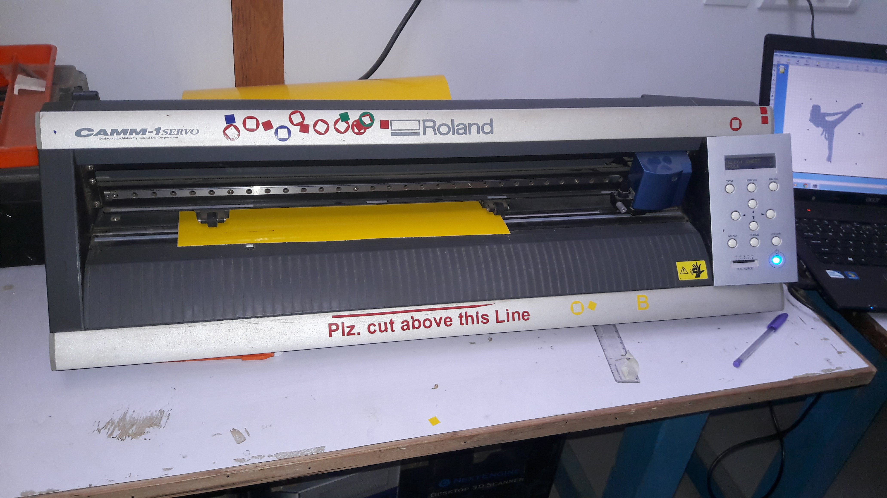
To start cutting with the help of Vinyl Cutter, you need to follow the steps given below:
- Open your image into the CutStudio
- Select the image and by right clicking on it give the image outline.
- Start the machine
- Set the force and origin
- Now click "cutting" in the software. By this command the machine will start cutting the material.
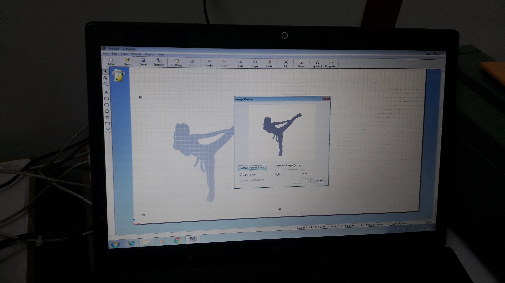
After the cutting is over then we need to gentally cut the material
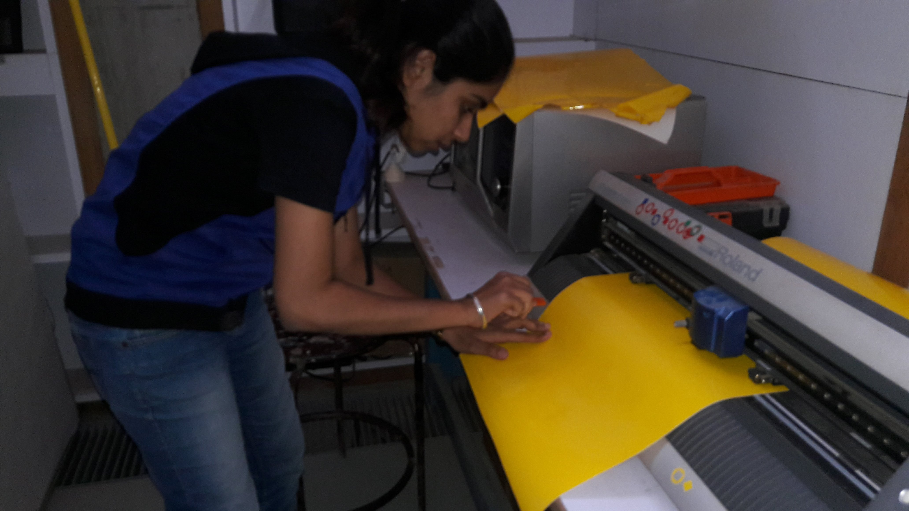
Now for getting the better outline image we need to remove the outer layer first. Remove it gentally
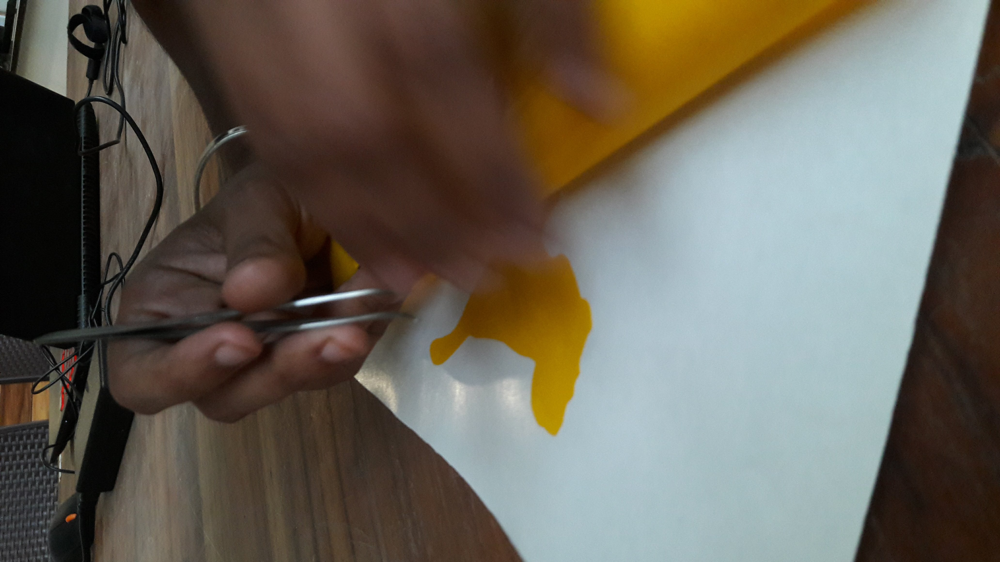 As the gum was not so sticky I removed the sketch directly from the paper and then stick it to my Laptop.
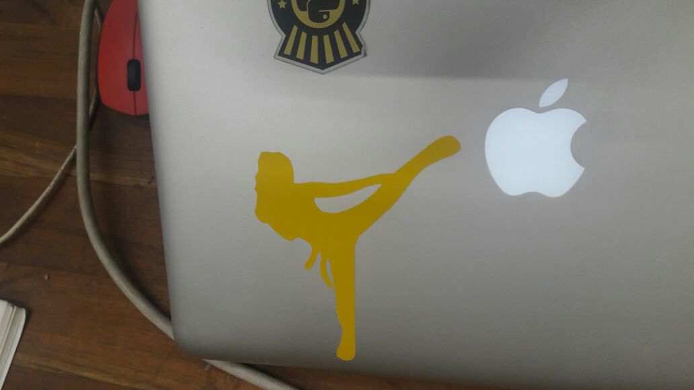
Laser cutting
Heter we have SIL Laser cutting machine. The software connected to it is RD Work. For importing any file this software we need to convert the file into (.dxf). The cutting, engraving and etching speed and power is possible to change. I am using a 1.9 mm thick MDF sheet.Follow the steps given below to start with laser cutting machine.
- Import your .dxf file into the software and set power and speed according to the material.
- The green sqaure dot on your sketch shows the origin.
- Select the file and click on Download
- Go to the machine and adjust the focus with the help of lens.
- Select the file and then set the origin of the laser extruder and select "Frame"
- Setting the frame will help you to know the area in which your sketch will get cut. Then you can start cutting.
Comb
It is difficult to know the pressfit dimentions of material of different thickness. So to overcome this a comb is made. In this kind of comb we are able to check different material of differen thicknes. Because of this trial and error time is saved. In laser cutting machine some of the material is burned so it is always a lesser dimention than the actual.
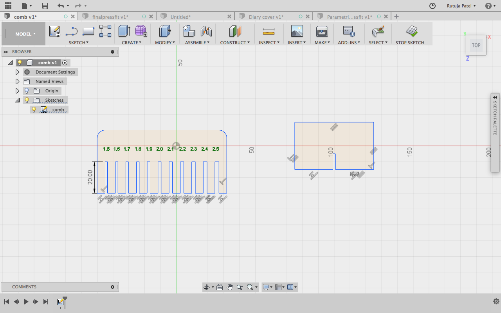
Pressfit
For a pressfit we had to make a Parametric design. I used Fusion 360 to make a parametric design. I am new to Designing so it was difficult for me to understand what is Parametric design. Gaurav explained me the method to set the parameters. After that I was a bit clear about the Parametric design. As I am using a 1.9 mm MDF sheet, I need to give a 1.7 mm for fitting in the material.I wanted a make a square and slots on it's diagonal side. So first of all I started with making a square of 50 mm and made diagonals in it. Then i made the offset of lines in both direction. I had given 0.85 mm as distance between the slots of pressfit.
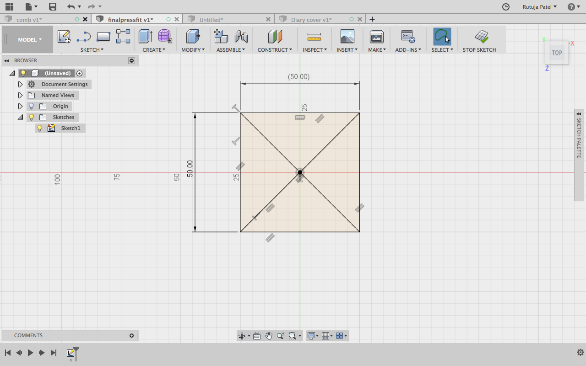
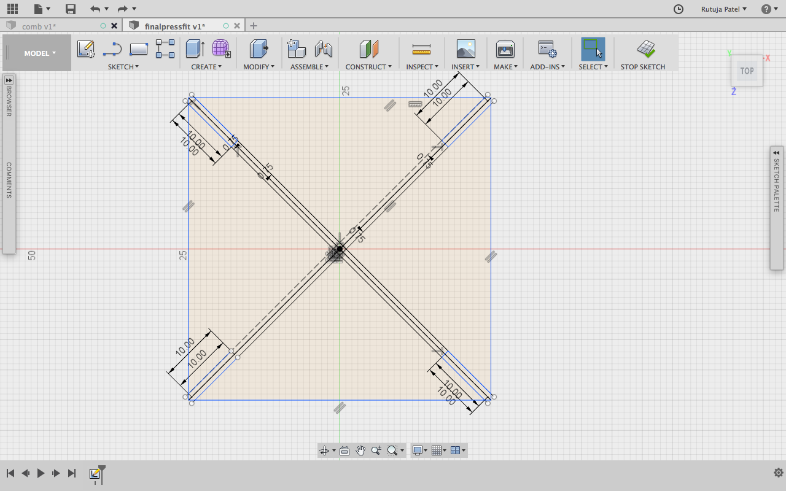
Now the width we get is 1.7 mm and mark the depth of the slot as 10 mm
I trimed the useless lines and finally got the figure as below.
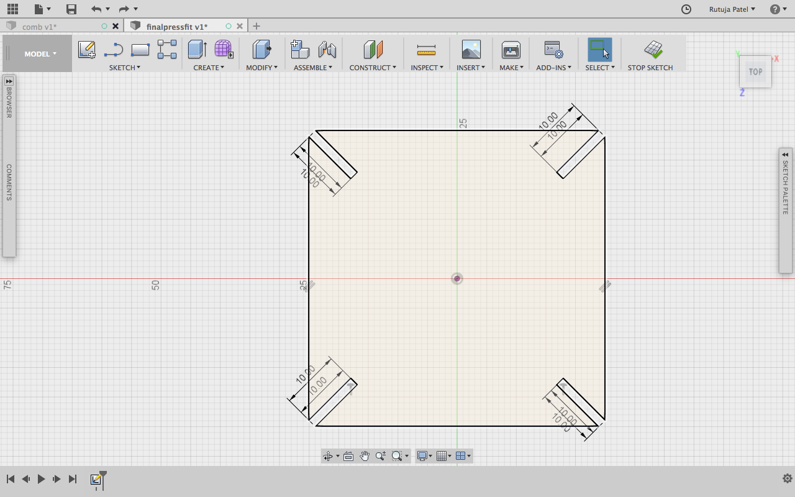
The sketch is ready now, I have to give parameters. Go to (Modify << Change Parameters). This will open a window in which you can define the parameters you want to give.
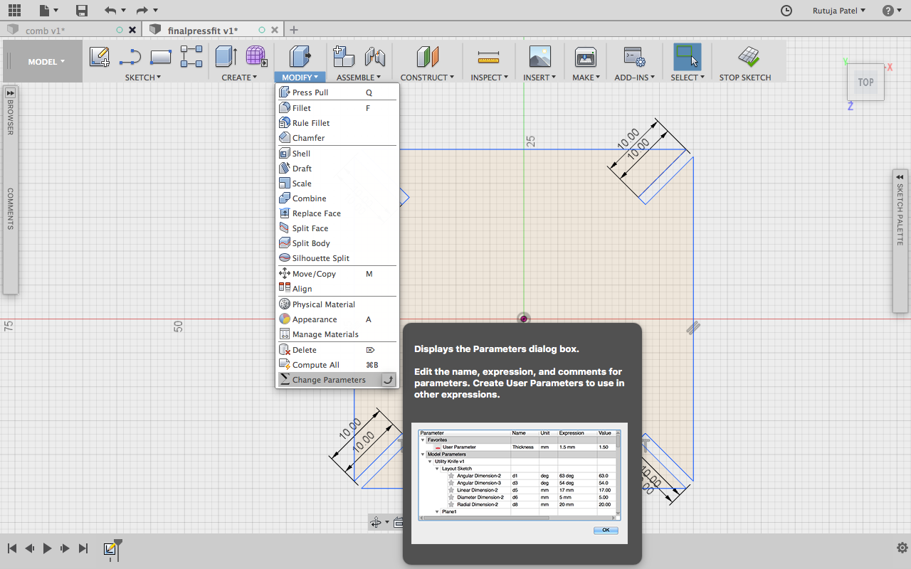
Give Parameters of Length and Height. I gave the parameters which I had drawn into the software.
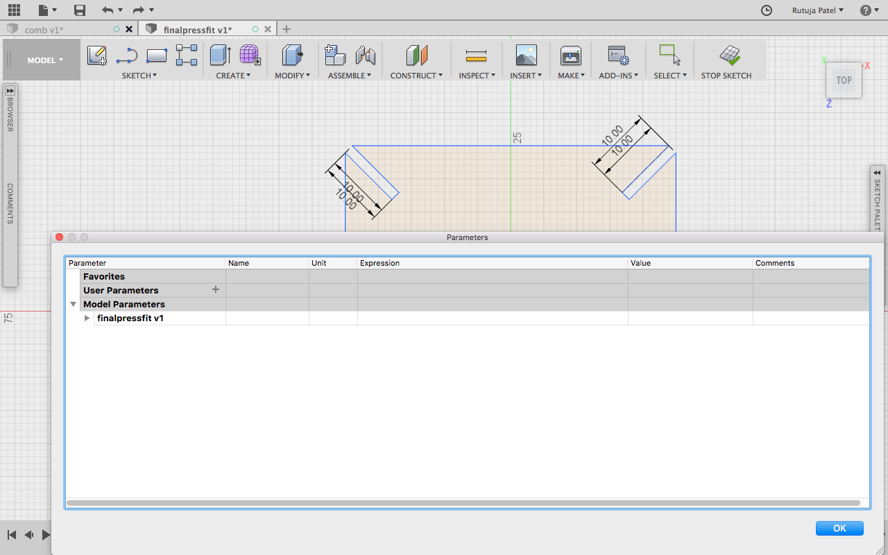
After giving different paramters I got a totally different design which was not expected. I didn't give the parameters correctly and so the sketch got spoiled.

Finally I got the correct parameters after trying a lot and was able to change the size with correct dimentions

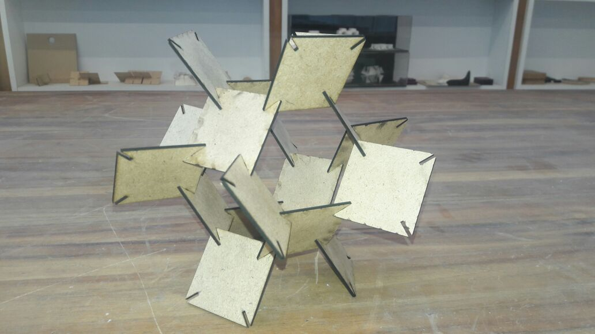 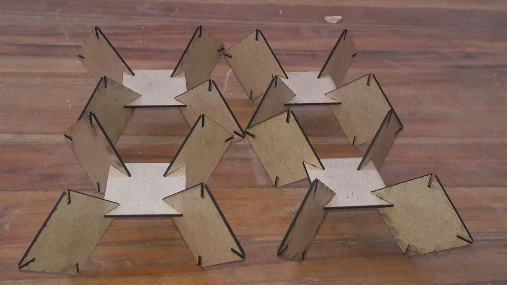
Diary Cover
I took the dimention of my Diary and made a same dimention box in Fusion.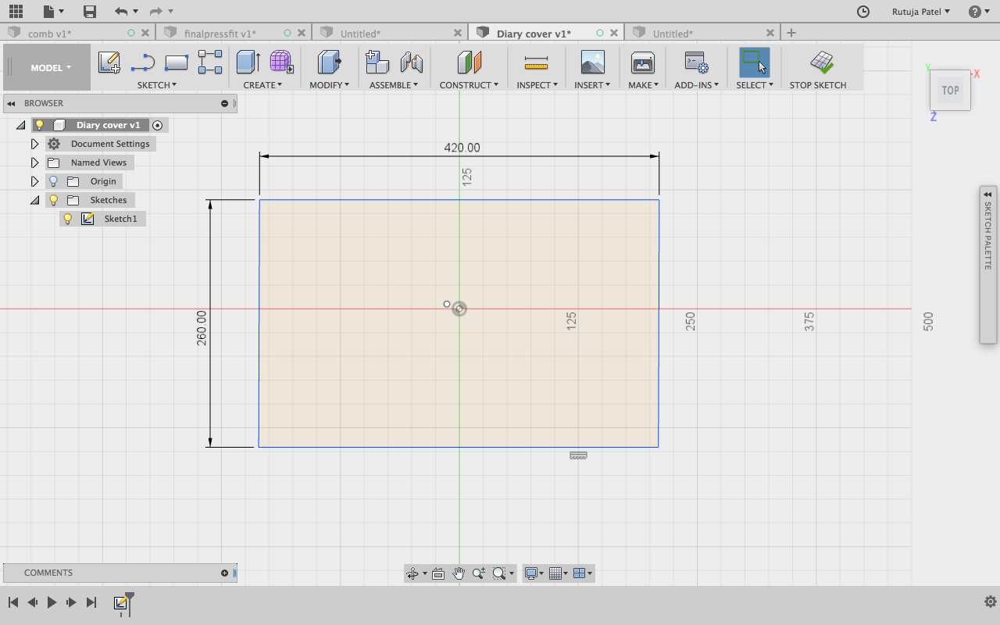
The thickness of my Diary is 19 mm and the kerf I have given is about 30 mm. So the Kerfing to be made is in between 30 mm.
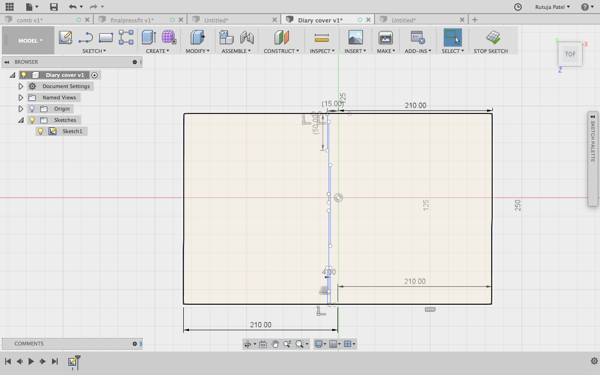
Repeating the lines by Offset Command. But it could go only till 28mm.
For Kerf, the distance between two cuts must nearly be similar to the thickness of the material. So I have given 2 mm distance between the cuts. After cutting the sketch I came up with this.

Now I kept my Diary into the cover it fitted well as the dimentions I kept were quite large. The final sketch for this is as shown below
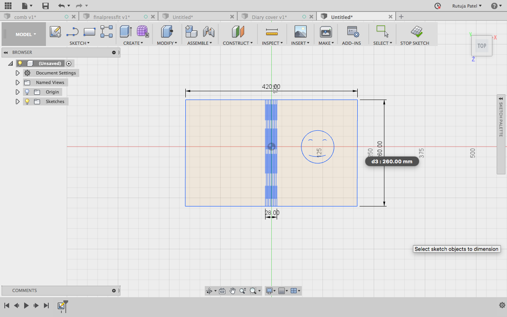
Parametric Design
I shifted to Rhino for making the parametric construction. Link of tutorial I refered. I referred the basic of Grasshopper from here . First of all we need to make a notch for the structure we are going to make. We can make any structure we want.
.png)
Now we need to take the notch into the grasshopper. For this go to the grasshopper screen and select curve, you can double click in the plane and write crv. Now Right click << set one curve and then click on the notch at the left - this commands will help in setting the curve of Rhino file into Grasshopper. By right clicking on the curve, you will also be able to change the name as here I have given as “Notch Geometry”.
.png)
.png)
.png)
Now for making the notch able to fix in the geometry we want, we need to follow some steps. Double Click and make a Bounding Box - this component is for making a point like outline around the notch geometry. Basically it represents graphical uv points
.png)
Now another component Deconstruct Brep(Boundary representation). As the name suggests, it will represent the boundary of the notch.
.png)
Now evaluate the component i.e to mark the point on the notch from where we want to connect the notch any geometry. For this select Evaluate Surface component give the point where you want it to join. You can select the point with Panel component.
.png)
.png)
Now we can make the shape we want for the pressfit connection. I wanted to make a square so I chose the rectangle component from the grasshopper and then brought it to Rhino. For choosing the rectangle component Double click << Rectangle. This will make a rectangle component which by default draws at the origin in rhino. The rectangle which we have constructed has a default dimension i.e x from -1 to 1 and y from -2 to 2. For making it parametric we need a Construct Domain component and give it number slider so that we will be able to change the dimension. Now when we connect the domain to x and y coordinates we can find the rectangle and also can change it’s dimension from the slider.
.png)
Now we need to map the notch to the geometry we made. For this we need to find the points on the rectangle and join the notch point to it. For finding the points we need to explode the rectangle through the Explode component. Use Horizontal Frame component can be used to set the points. We can set the number on the HFrame component and give a number slider to it.
.png)
Now we need to map all the notches to the frame we made. For doing this use Orient component. In this component we have to give the geometry that we want to align at at which points. Right click on the component and graft to set the points and mapping the notch to the frame.
.png)
As you can see in the above figure the notches are aligned properly, we can rotate the notches and also change the notch position. I arranged the notches on the corners and moved it to 45 angle..png)
Now we subtract the notch geometry form the frame. We use Region Difference component to do it. By using this we will be able to find the geometry we want.
.png)
Now for doing it for the multiple geometry, we need to make an array. I choose to use rectangular array. In this component, we need to give the geometry andthe frame. By default it makes array of 6 so if we want to increase the number we can give a number slider.
.png)
Now the geometry we made is of the grasshopper file for bringing it to the rhino file we need to follow some steps. Right click on the Array component and Bake it. This will show a window from where you can choose the layer on which you want to bake it. Now the sketch is ready to be laser cut. Select the portion and export the file.
.png)
.png)
As I was using a 2mm sheet the width of my notch was supposed to be 1.7 mm. So I went to the Rhino and changed the notch width.
Now we need to take the notch into the grasshopper. For this go to the grasshopper screen and select curve, you can double click in the plane and write crv. Now Right click << set one curve and then click on the notch at the left - this commands will help in setting the curve of Rhino file into Grasshopper. By right clicking on the curve, you will also be able to change the name as here I have given as “Notch Geometry”.
Now for making the notch able to fix in the geometry we want, we need to follow some steps. Double Click and make a Bounding Box - this component is for making a point like outline around the notch geometry. Basically it represents graphical uv points
Now another component Deconstruct Brep(Boundary representation). As the name suggests, it will represent the boundary of the notch.
Now evaluate the component i.e to mark the point on the notch from where we want to connect the notch any geometry. For this select Evaluate Surface component give the point where you want it to join. You can select the point with Panel component.
Now we can make the shape we want for the pressfit connection. I wanted to make a square so I chose the rectangle component from the grasshopper and then brought it to Rhino. For choosing the rectangle component Double click << Rectangle. This will make a rectangle component which by default draws at the origin in rhino. The rectangle which we have constructed has a default dimension i.e x from -1 to 1 and y from -2 to 2. For making it parametric we need a Construct Domain component and give it number slider so that we will be able to change the dimension. Now when we connect the domain to x and y coordinates we can find the rectangle and also can change it’s dimension from the slider.
Now we need to map the notch to the geometry we made. For this we need to find the points on the rectangle and join the notch point to it. For finding the points we need to explode the rectangle through the Explode component. Use Horizontal Frame component can be used to set the points. We can set the number on the HFrame component and give a number slider to it.
Now we need to map all the notches to the frame we made. For doing this use Orient component. In this component we have to give the geometry that we want to align at at which points. Right click on the component and graft to set the points and mapping the notch to the frame.
As you can see in the above figure the notches are aligned properly, we can rotate the notches and also change the notch position. I arranged the notches on the corners and moved it to 45 angle.
Now we subtract the notch geometry form the frame. We use Region Difference component to do it. By using this we will be able to find the geometry we want.
Now for doing it for the multiple geometry, we need to make an array. I choose to use rectangular array. In this component, we need to give the geometry andthe frame. By default it makes array of 6 so if we want to increase the number we can give a number slider.
Now the geometry we made is of the grasshopper file for bringing it to the rhino file we need to follow some steps. Right click on the Array component and Bake it. This will show a window from where you can choose the layer on which you want to bake it. Now the sketch is ready to be laser cut. Select the portion and export the file.
As I was using a 2mm sheet the width of my notch was supposed to be 1.7 mm. So I went to the Rhino and changed the notch width.